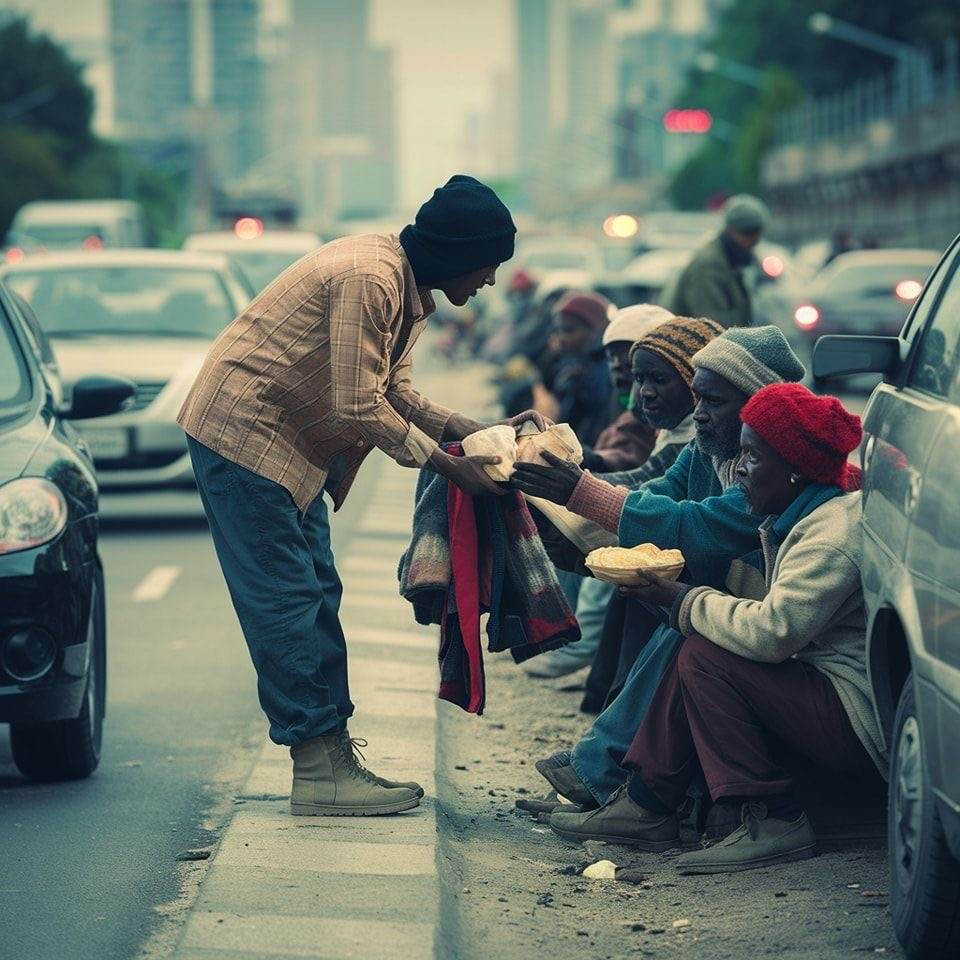

Nos Réalisations
Le Conseil Provincial du Batha a mené et accompagné plusieurs actions concrètes en faveur du développement durable et de l’amélioration des conditions de vie des populations.
Renforcement des infrastructures locales
Construction et réhabilitation d’infrastructures essentielles telles que des écoles, des centres de santé et des pistes rurales afin de faciliter l’accès aux services de base pour les populations.
Soutien aux activités agricoles et pastorales
Appui aux producteurs et éleveurs à travers des actions de sensibilisation, de renforcement des capacités et de soutien aux initiatives locales pour améliorer la sécurité alimentaire.

Actions sociales et humanitaires
Mise en œuvre d’actions sociales ciblées au profit des populations vulnérables, en collaboration avec les partenaires institutionnels et les organisations humanitaires.
Impact et perspectives
À travers ces réalisations, le Conseil Provincial du Batha poursuit ses efforts pour renforcer l’impact de ses interventions et inscrire ses actions dans une dynamique de développement durable, participatif et inclusif au bénéfice de l’ensemble des citoyens.